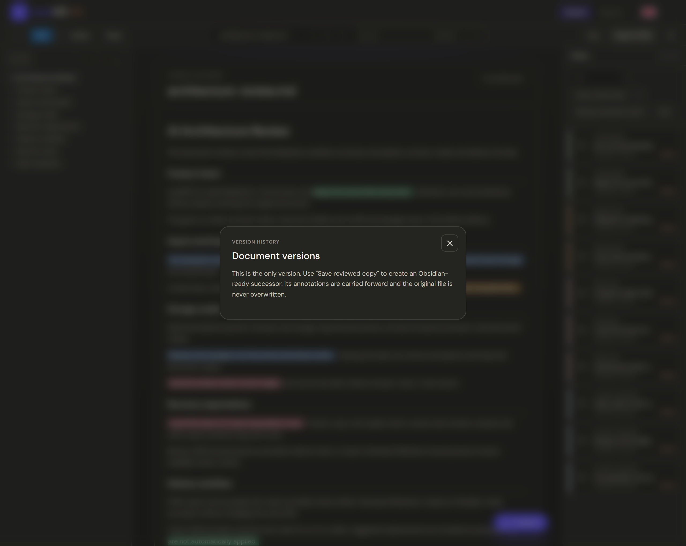
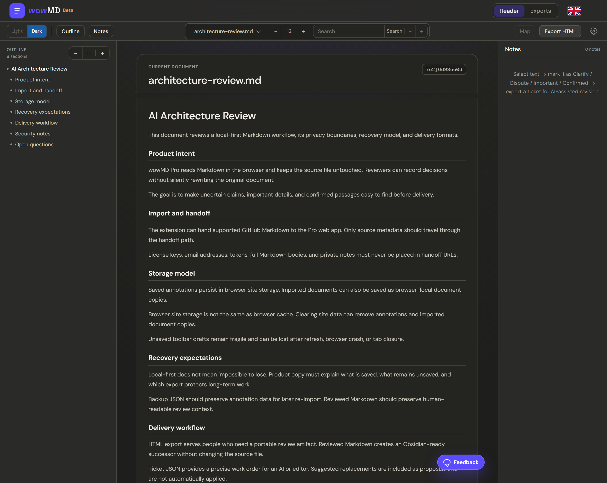
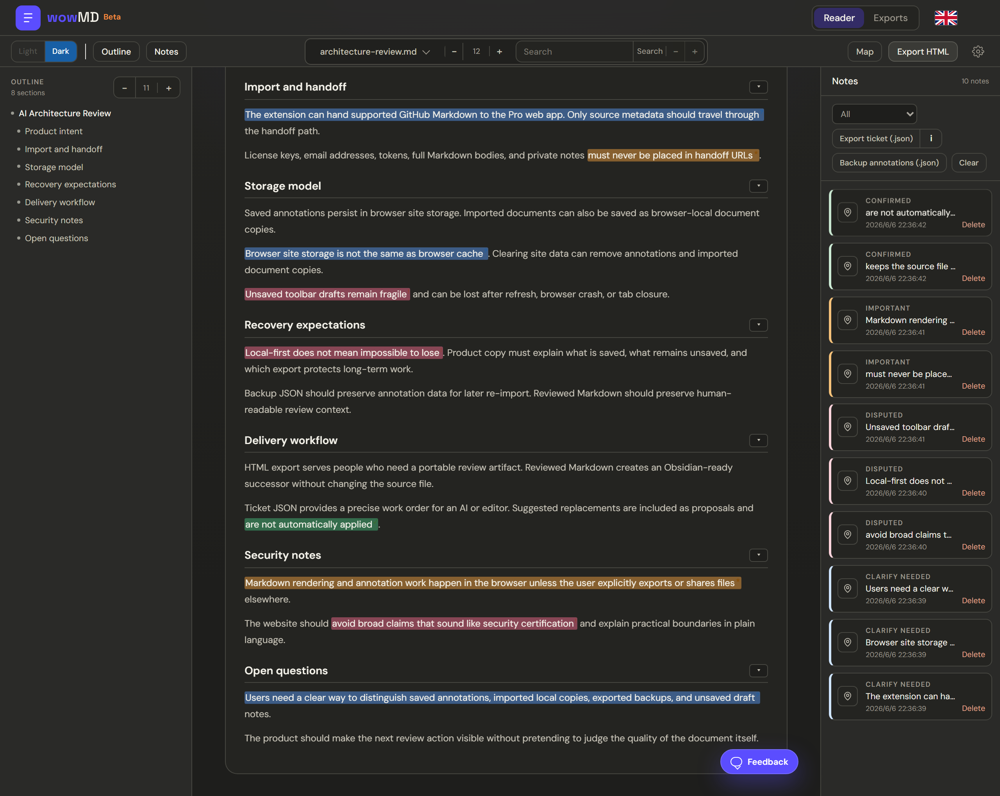
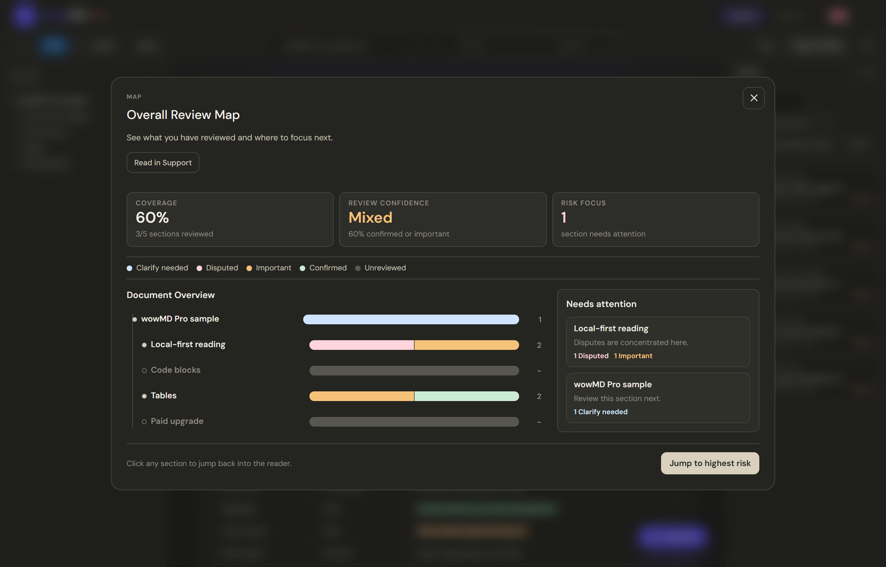
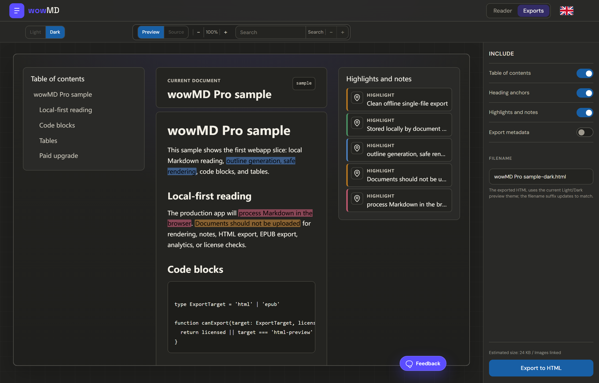
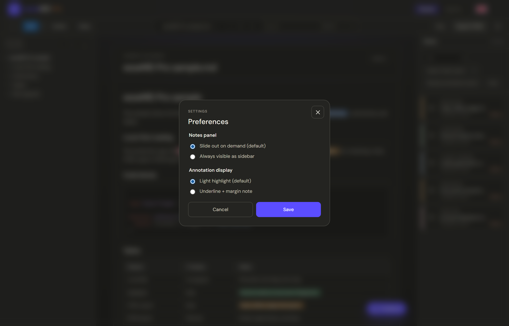

开发者阅读开源项目 README快速找到安装命令、API、限制和警告。
- 01使用 Chrome 扩展打开
- 02通过目录导航并折叠章节
- 03检查命令、代码和表格
- 04仅在需要深度审阅时进入 Pro
最佳结果快速结构化阅读，无需导出
支持
从让 wowMD 与众不同的核心概念开始：类型化审阅、跨版本存活、给 Obsidian 的审阅版 Markdown，以及可以交给 AI 的工单。
通过文件选择器或拖放打开本地 .md 与 .markdown 文件，也可以从扩展继续处理受支持的公开 GitHub Markdown。
审阅在浏览器中完成，绝不写回原文。保存审阅副本会创建单独的 Obsidian-ready .md 后继版本，并延续标注。
版本历史可重新打开由当前文档谱系创建的浏览器本地后继版本。

在 wowMD 中标记文本时，你记录的是带有后续行动含义的判断。这些类型会驱动笔记面板、总体审阅地图和工单 JSON 图例。
| 需澄清 | 解释或澄清这一点，不改变其实质。 |
|---|---|
| 存疑 | 审查这一说法；可能不正确，可能需要修正。 |
| 重要 | 保留并强调这一关键点。 |
| 已确认 | 已审阅且正确；无需操作。 |
当源文档变化时，wowMD 会尝试用选中的引用文字和上下文将你的标注重新锚定到同一段落。如果某段文字确实消失，标注会变成孤儿状态，可通过 Find 手动恢复。
工单打包了文档快照、双语类型对照表、章节上下文、选中引文、备注和建议替换。它与备份 JSON 不同——备份 JSON 只存储原始标注数据用于备份和重新导入。
??????? Markdown ??????????? wowMD Ticket JSON?
?? ticket.document.markdownSnapshot ?????????? ticket.executionContract?ticket.sections?ticket.confirmedZones?ticket.lineageOutput????????
???
1. ? ticket.tickets ?????? id ? sequence ?????
2. ? ticket.typeLegend ? ticket.executionContract.typeOperations ?????????????
3. ? headingPath?sectionBody?quote?prefix?suffix ????????????????????????????????????
4. ?????????????? ticket.executionContract ????????????
5. ?? suggestedReplacement??????note ??????????????????????????? wording?
6. ?? ticket.lineageOutput?????????? wowMD document-meta block????????? bodyHash????? bodyHash?
???
????????? Markdown???????????????? ticket id ? sequence ??????????
Ticket JSON?
<????????? JSON>已保存标注和导入的 GitHub 文档副本使用浏览器站点数据，而不是普通浏览器缓存。本地文件仍是会话输入；wowMD 按文档指纹保存其标注。
导出备份 JSON 以保留可重新导入的标注数据，导出审阅版 Markdown 以保留可读审阅上下文，并保存完成的交付产物用于长期保管。
典型工作流
每个工作流都连接真实输入、合适的审阅动作、关注重点和最佳交付产物。

大纲
折叠
搜索
代码、表格、主题和字号

选择工具栏
笔记
按类型筛选
查看章节覆盖率、审阅置信度、风险重点、类型标注分布，以及下一步需要关注的章节。


HTML 导出面向人：一个可离线阅读的文件，保留结构、高亮和备注。
审阅版 Markdown 面向 Obsidian：新的 .md 副本，包含审阅 callout、标签和属性。它不会修改原文件，也不会应用建议替换。
备份 JSON 用于备份和重新导入：原始标注数据。
工单 JSON 面向 AI 或编辑：由你的类型化判断生成的工作指令。

选择笔记面板按需滑出，或始终作为侧边栏显示。
选择浅色高亮，或下划线加页边笔记的标注显示方式。
偏好设置保存在此浏览器本地。
用此区域报告 bug、令人困惑的文案、缺少的指南内容或工作流需求。
wowMD 在源文件变化时会重新锚定标注。如果某段文字无法找到，可使用笔记面板的 Find 功能手动恢复。
没有。审阅工作流是本地优先的。文件和标注保留在你的浏览器中，除非你自己导出并分享它们。
不能。已保存标注和导入的文档副本使用浏览器站点数据。清除站点数据或迁移到其他浏览器、配置文件或设备前，请导出备份 JSON 和完成的审阅产物。
HTML 给人阅读；审阅版 Markdown 给 Obsidian；备份 JSON 用于备份或重新导入标注数据；当你希望 AI 或编辑根据你的类型化判断执行操作时，使用工单 JSON。
已收到
我们会阅读每一条留言。几秒后将返回首页。